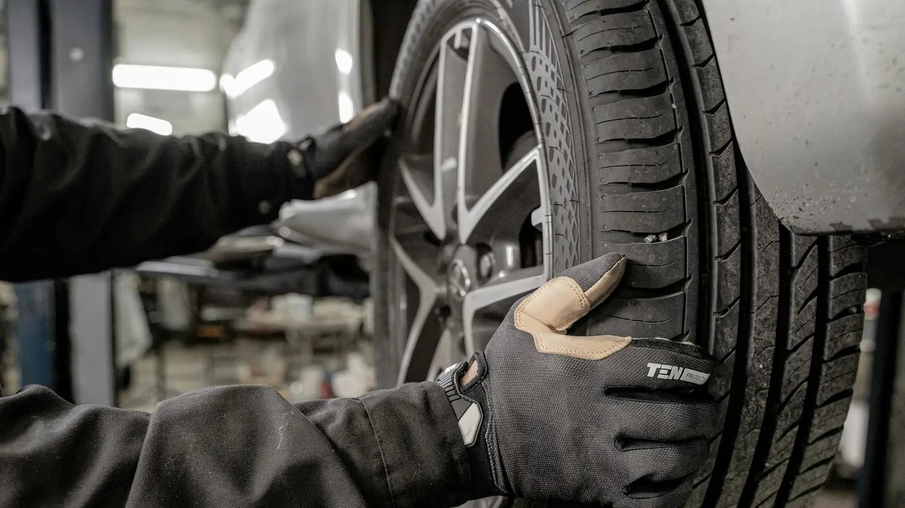
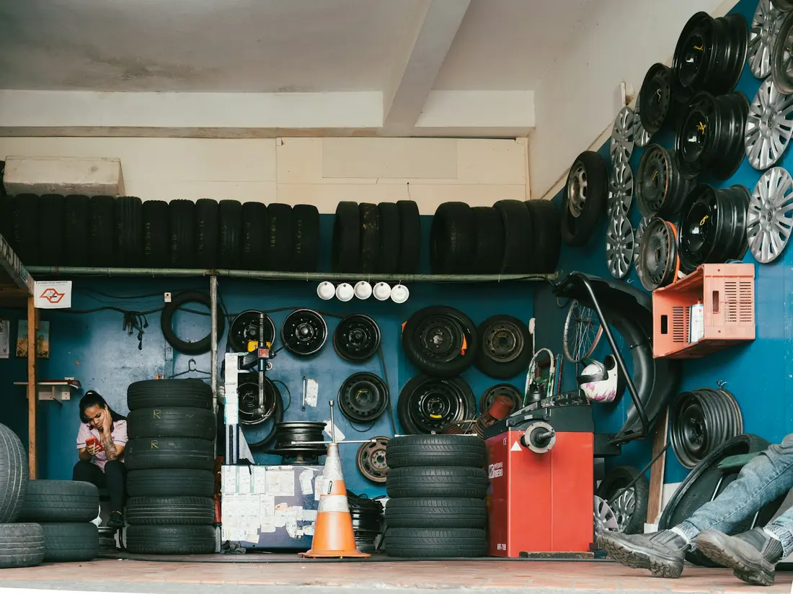

Шинный двор: переобувка без очереди в Новосибирске
Четыре поста, работаем с 8 утра. Запишитесь на удобное время и узнайте цену для своего радиуса.
4,7 · 98 отзывов в 2ГИС

Сменные шины храним до следующего сезона
2 800 ₽ за сезон. Мойка перед хранением. Упаковка и бирка с госномером. Отапливаемый склад.
Оставить шиныОтзывы
«Утром записался через сайт, в обед уже переобулся. Всё по прайсу.»
«Быстро и аккуратно, диски не поцарапали. Отдельное спасибо за кофе в ожидании.»
Марина, Skoda Octavia
ул. Станционная, 30
- Пн
- 8:00–21:00
- Вт
- 8:00–21:00
- Ср
- 8:00–21:00
- Чт
- 8:00–21:00
- Пт
- 8:00–21:00
- Сб
- 9:00–19:00
- Вс
- выходной
Вопросы
Работаете в воскресенье?
Нет, в воскресенье выходной. В субботу с 9 до 19.
Сколько ждать без записи?
В сезон до полутора часов. С записью заезжаете в своё время.
Берёте шины на хранение?
Да, на сезон. Моем, упаковываем и храним на отапливаемом складе.
Работаете с низким профилем и RunFlat?
Да, станки позволяют, цену уточним по телефону.